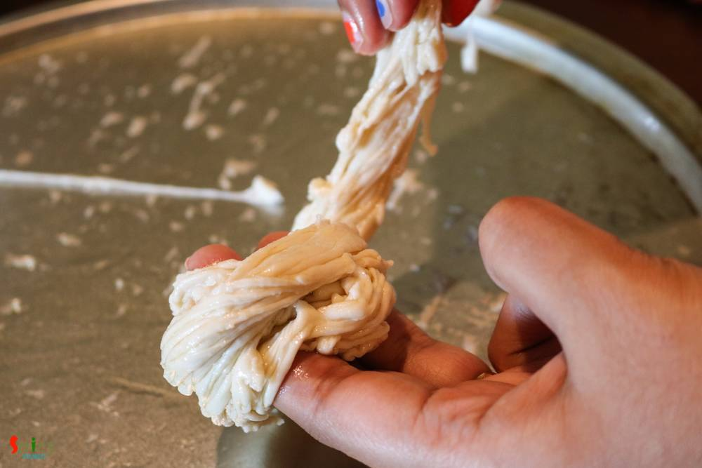

Simple and Easy Recipes
Pheni Paratha / Shredded Flatbread
© 2016 Spicy World, Published on: Jul 14, 2016
I had no idea what this 'pheni paratha' is until one day I watched a video of this in YouTube and the end result was jaw dropping - so flaky and soft parathas ! Now the thing is they are not easy to make. You will need some patience and several trials to achieve the perfect texture of 'pheni parathas'. But these delicious breads are worth trying. I served 'Keema Aloo' with these parathas and we both enjoyed the combo. Try this recipe in your kitchen and let me know how it turned out for you.

Ingredients
- 1 cup of all purpose flour / maida.
- 2 Teaspoons of semolina / sooji.
- Pinch of salt.
- Warm water.
- Ghee / clarified butter.
- Some dry flour.


Steps
Put the flour, salt and semolina in a mixing bowl. Mix well.

Then gradually add lukewarm water and start mixing the flour.
Make a soft dough and kned it very well for 5 minutes.
Cover the dough with a damp cloth and let it rest for 25 minutes.
Then divide the dough in similar portions.
Roll one ball in dry flour and flatten it to a very thin layer with the help of rolling pin.
Apply 1 Tablespoon of ghee and sprinkle some dry flour all over it.
Take a knife or pizza cutter and start cutting it from top to bottom in very thin lines.
After that with the help of your fingertips gently scrape the sides towards the middle. Be very patience and careful.
Put it all together in one thick line.

Take that strip and roll it with the help of your finger.
Make rest of them in same way.
Let these rolling balls rest for 5 minutes with cover.
Then take one ball and flatten it with your hand to 4 - 5 inches.
Make rest of them like this way and fry them in hot tawa with very little oil.
Your pheni parathas are ready ...
Serve them hot with any type of gravy ...
")